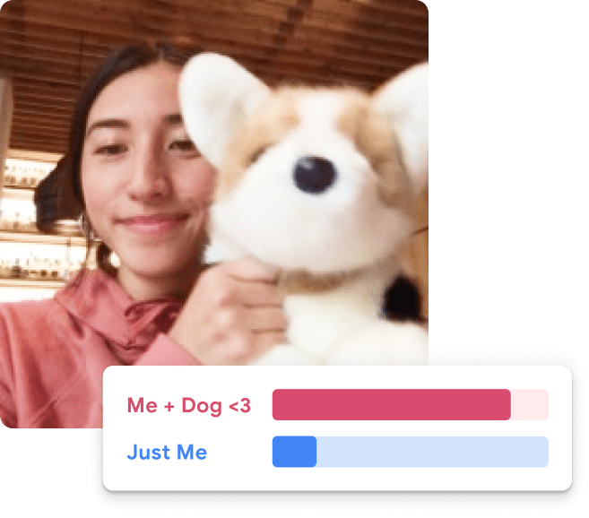
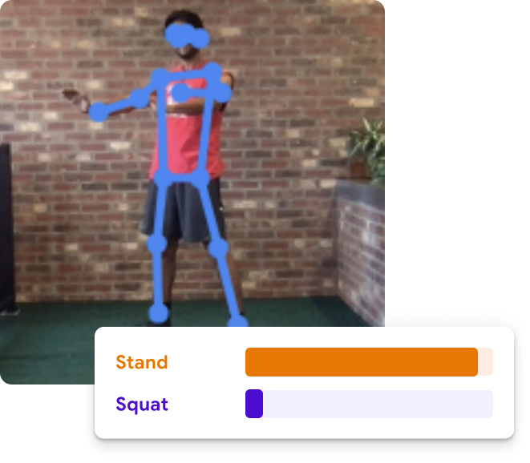

Teachable Machine
Train a computer to recognize your own images, sounds, & poses.
A fast, easy way to create machine learning models for your sites, apps, and more – no expertise or coding required.
What is Teachable Machine?
Teachable Machine is a web-based tool that makes creating machine learning models fast, easy, and accessible to everyone. (Note: you can find the first version of Teachable Machine from 2017 here.)
How do I use it?

image project
Teach a model to classify images using files or your webcam.
Teachable Machine Image Model

sounds project
Teach a model to classify audio by recording short sound samples.
Teachable Machine Audio Model

poses project
Teach a model to classify body positions using files or striking poses in your webcam.
Teachable Machine Pose Model